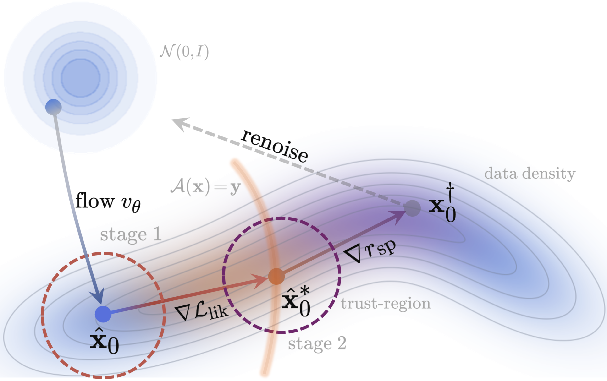
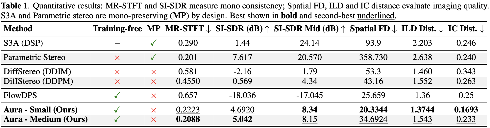
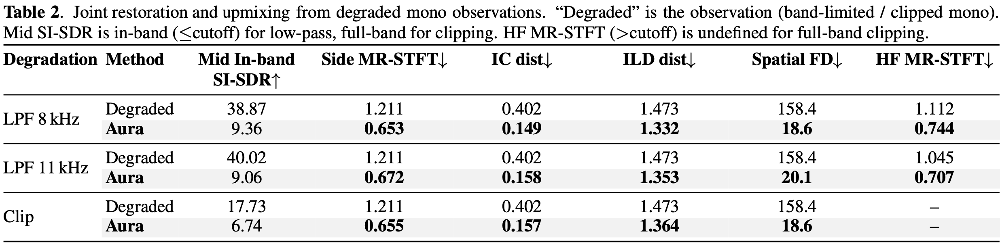

Abstract
We consider the problem of mono-to-stereo audio upmixing: generating a high-fidelity two-channel stereo signal from a single-channel recording. The task is fundamentally ill-posed, i.e., many stereo signals are consistent with a given mono recording. An effective upmixer must therefore generate a realistic, musically coherent stereo image while preserving the underlying audio content. Previous approaches have relied on signal-processing driven decorrelation, ambience extraction and supervised learning, offering limited spatial control or requiring task-specific training. In response, we propose AURA (Audio Upmixing using Reward-tilted Flows), which reformulates upmixing as a generative inverse problem using a pretrained flow prior. To enable controllable spatial imaging, we design a reward-tilted posterior sampler whose reward penalizes divergences between generated and target distributions of inter-channel cues. Composing forward operators further enables joint restoration and upmixing without retraining or finetuning. Objective and subjective evaluations on real-world music recordings from MUSDB18-HQ demonstrate our method's effectiveness relative to several baselines.
Method

Mono-to-Stereo Upmixing
Each excerpt is upmixed from the mono downmix of the original MUSDB18-HQ stereo mix. All systems are loudness-matched to the reference, so any difference you hear is spatial rather than a level difference. Headphones recommended.
Additional Evaluations
A further set of excerpts, including a comparison against parametric stereo.

Joint Mono-to-Stereo and Restoration
Here the input is both mono and low-pass filtered, so the model must restore the missing high band and generate the stereo image in a single pass.

Dataset
All excerpts are drawn from MUSDB18-HQ: Z. Rafii, A. Liutkus, F.-R. Stöter, S. I. Mimilakis, and R. Bittner, “MUSDB18-HQ — an uncompressed version of MUSDB18,” Zenodo, Aug. 2019. doi:10.5281/zenodo.3338373